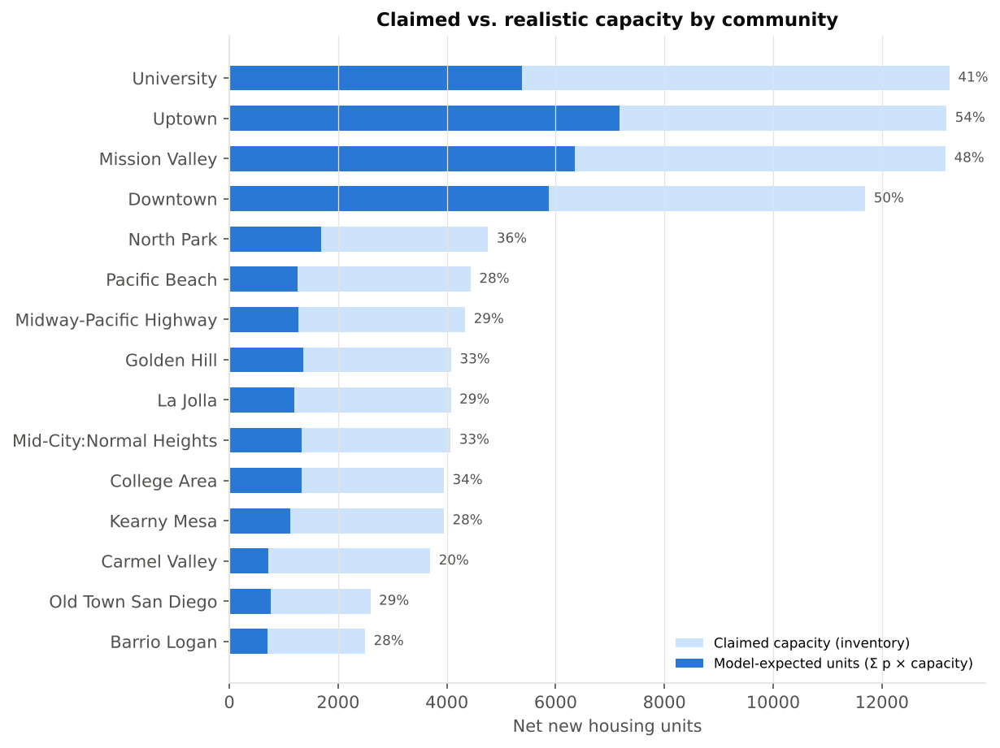
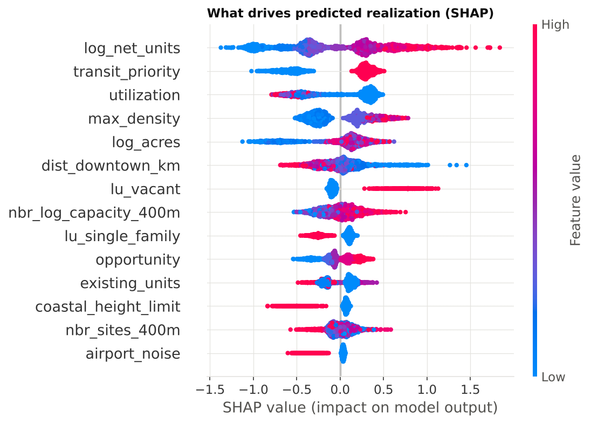
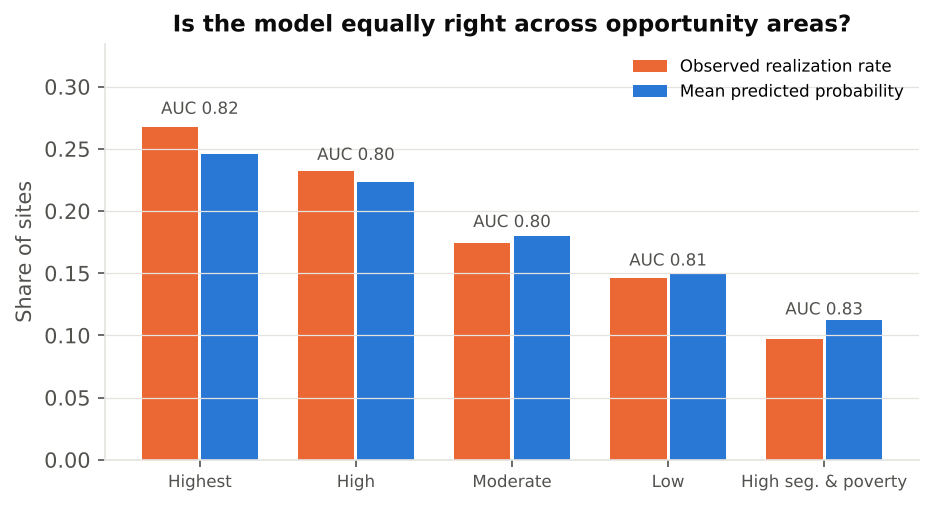

I build location-aware machine learning for housing, land use and infrastructure, helping planners see what is likely to happen on the ground, not just what is allowed on paper.
Predicting where zoned capacity actually becomes housing, and auditing those predictions for equity.
Spatially honest ML
Spatial cross-validation, calibration and explainable AI so models hold up in neighborhoods they have never seen.
Remote sensing & drones
Orthomosaics, 3D models and imagery for campus and city planning.
Responsible AI in cities
Transparency and governance for AI used in municipal decisions.
Featured research project
Housing policy · Predictive modeling
Will it get built? Predicting which Housing Element sites are realized
California cities must show the state they have enough land zoned to meet their housing targets. San Diego's 2021–2029 Housing Element lists thousands of parcels as able to hold new homes, but listing a site does not mean anyone will build on it.
Of the sites San Diego inventoried in 2021, which received housing approvals afterward, and can a spatially validated model predict that better than the inventory's own capacity assumptions?
The pipeline joins the City's sites inventory to development approvals, freezes features at the 2021 baseline to avoid look-ahead leakage, and validates on community plan areas the model has never seen. It produces calibrated site-level probabilities, a realistic-capacity estimate for each community, and an equity audit across state opportunity areas.
0.82 vs 0.74ROC-AUC: model vs. capacity-only baseline
35%of claimed capacity expected to be realized
28leak-free features, 3 unit-tested rules

Claimed vs. realistic capacity by community plan area.

What drives the prediction (SHAP).

Accuracy and realization by opportunity area.
Figures shown come from a synthetic sample that mirrors the City's data schemas, used to develop and test the pipeline. The repository includes scripts to download and run on the real public data.
Who gets the shade? Ranking New York neighborhoods for tree planting
Across NYC's 42 health neighborhoods, tree canopy cools surfaces (−0.17 °F per point of canopy, R² 0.43), but heat illness follows poverty (r = 0.59), not surface heat (r = 0.20). The ranking rule is the policy: ranking by canopy gap puts 4 of the first 10 neighborhoods in the poorest third; an equity-weighted rule puts 9. A heat-illness model that looks useful on random tests fails when a whole borough is held out.
PySALMoran's I & LISASpatial lag & error modelsLeave-one-borough-out CVPublic data
A phone-first prototype where San Diego residents photograph broken sidewalks, potholes and dark streets, then vote on what each of seven areas should fix first. Research angle: whose problems get heard.
A website and article series: what GeoAI is, how cities measured themselves before machine learning, and who benefits when cities use spatial tools to decide.
One spatial database behind every project: San Diego neighborhoods, housing sites, CurbCall reports and NYC heat data, with a catalog that flags synthetic data and PostGIS views that join across projects.
Geodatabases ranking Capital Improvement Plan sites across four San Diego cities under MS4/NPDES permits.
ArcGIS ProPythonPower BI
UCSD campus CAD-to-GIS & UAV mapping
Georeferenced 1,788 AutoCAD drawings into an ArcGIS Pro basemap; drone orthomosaics and 3D models.
Drone2MapGeoreferencing
Community health equity mapping
Census/ACS data joined with infrastructure layers to find service gaps in underserved neighborhoods.
Spatial joinsCensus ACS
Wildfire & erosion landscape analysis
Slope, vegetation and BMP overlays for hazard-resilient planning in Southern California.
Hazard mitigationArcGIS Pro
Selected experience
Action Research, Project & Program Associate (2024–2026). Geodatabases ranking Capital Improvement Plan sites for MS4/NPDES stormwater programs across four San Diego municipalities; Python and SQL automation; executive dashboards.
UC San Diego Facilities Management, GIS Project Assistant (2023–2024). Georeferenced 1,788 AutoCAD drawings into an ArcGIS Pro basemap; drone orthomosaics and 3D models with Drone2Map.
American Academy of Pediatrics, R&D Intern (2023). Joined Census/ACS data with infrastructure layers to identify service-equity gaps.
UCSD Urban Expo, 3rd place: research on ethical AI deployment in U.S. municipal operations.